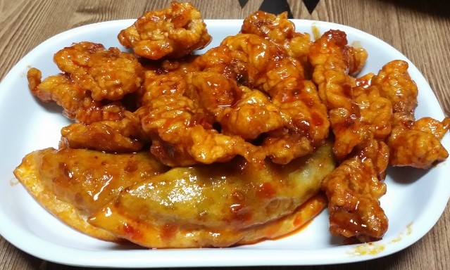

탕수육 만두, 깐풍기로 변신!
재료 : 남은 탕수육, 만두(소스에 버무려 지지않은)
깐풍 소스 - 고추기름 4큰술, 고추 5개 다진 것, 대파 1뿌리
다진 것, 설탕 1큰술, 식초 3큰술, 간장 1작은술, 소금 약간
- 남은 탕수육은 200도 오븐에 5분 가량 굽거나 전자렌지에
1분30초 정도 돌려 데운다.
- 달궈진 팬에 고추기름을 두르고 뜨거울 떄 다진 고추와 대파를 넣고 볶는다.
- 매운 향기가 올라 오면 나머지 양념 간장,설탕,식초를 넣고 파르르 끓여 준다.
- 데워진 탕수육과 서비스로 받은 만두를 넣고 잘 섞어주면 완성
Tip. 고추기름 - 식용유에 고춧가루를 이틀 정도 담궈 두거나 팬에 식용유와 고춧가루를 함께 넣고 불을 켜 볶은 후에 면보에 걸러 내세요.